Galeria de Cultura Coreans
A cultura da Coreia do Sul é representada em diversos aspectos: música, dança, vestimentas tradicionais, culinária, tecnologia, festas e rituais. O país valoriza o respeito, a família e a educação, unindo tradições antigas com a modernidade. Essa combinação faz da Coreia do Sul um exemplo de inovação cultural e preservação de suas raízes.
Esta galeria reúne algumas imagens simbólicas que representam a cultura e a identidade da Coreia do Sul, valorizando sua diversidade e riqueza cultural. As imagens podem mostrar festas tradicionais, trajes típicos, culinária, dança, música, arquitetura e tecnologia moderna. Elas também podem ser substituídas por fotos de fontes confiáveis ou por desenhos feitos pelos próprios alunos, destacando a criatividade e as tradições do povo sul-coreano.
 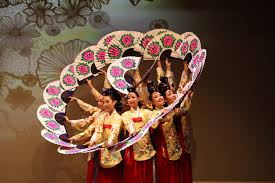
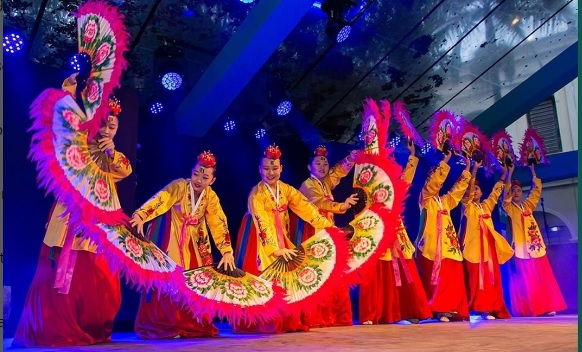
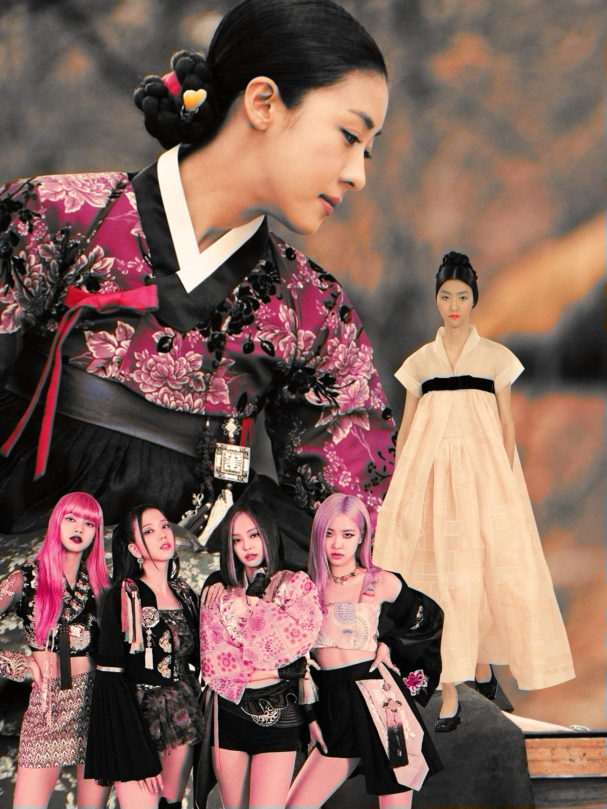
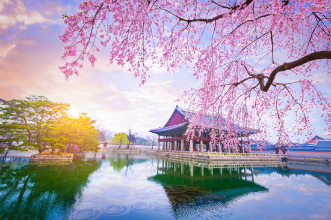
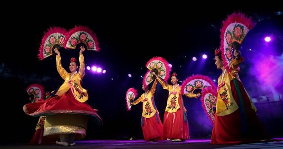
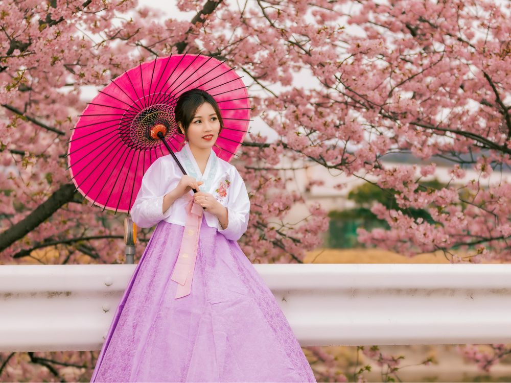
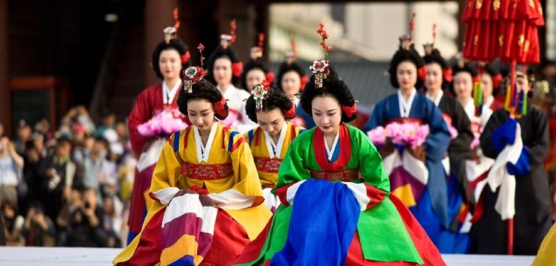
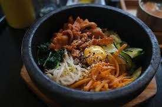
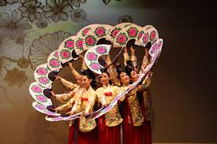
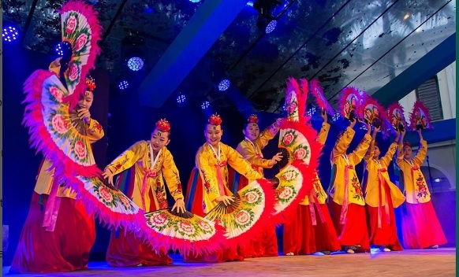
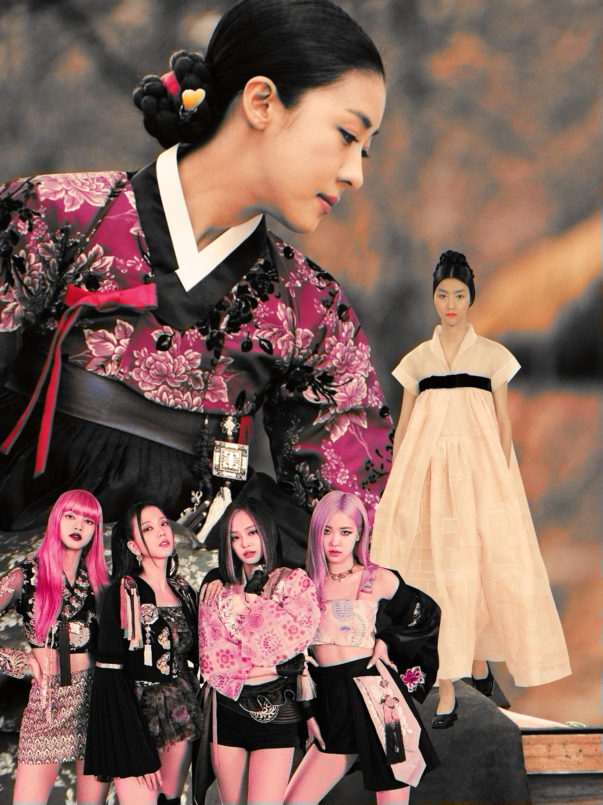
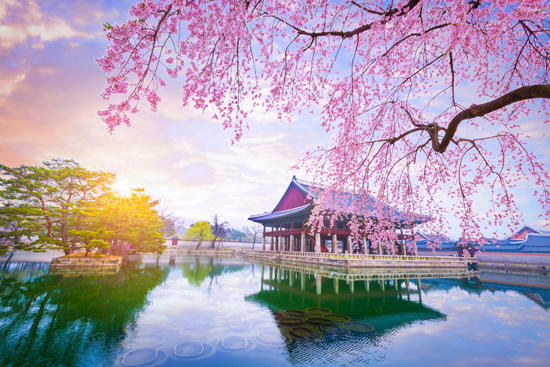
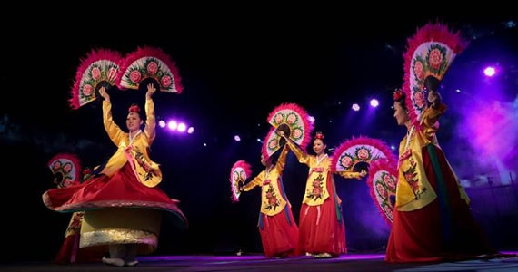
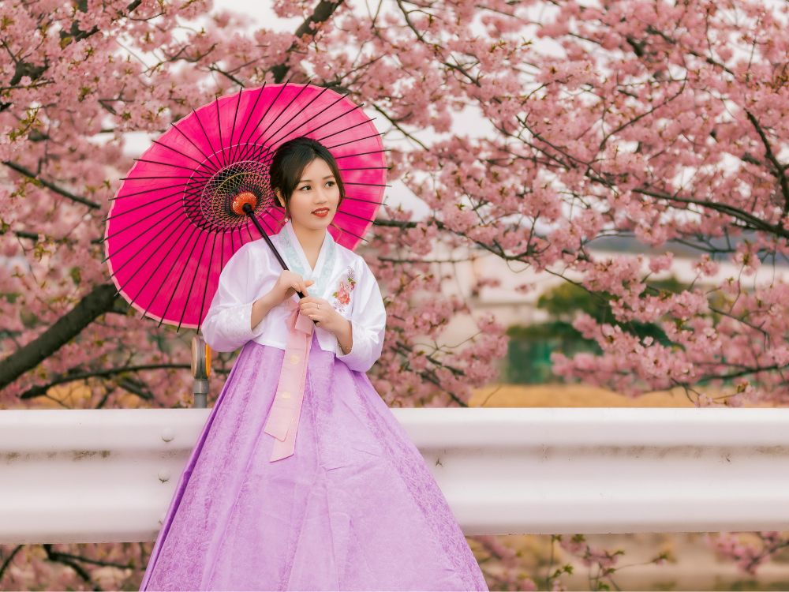
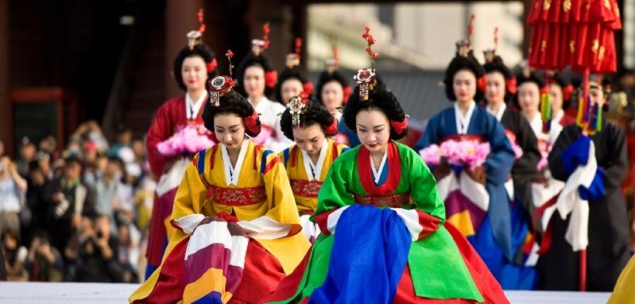
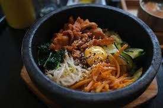